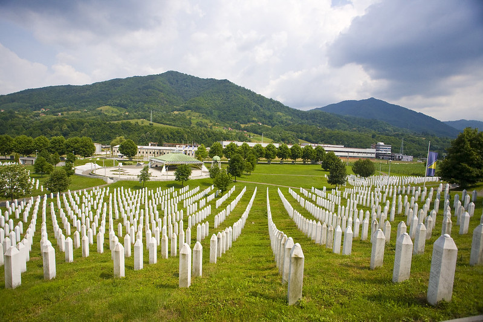
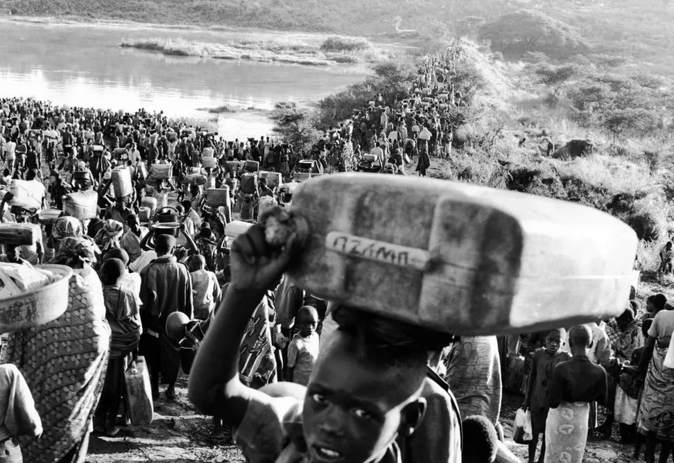
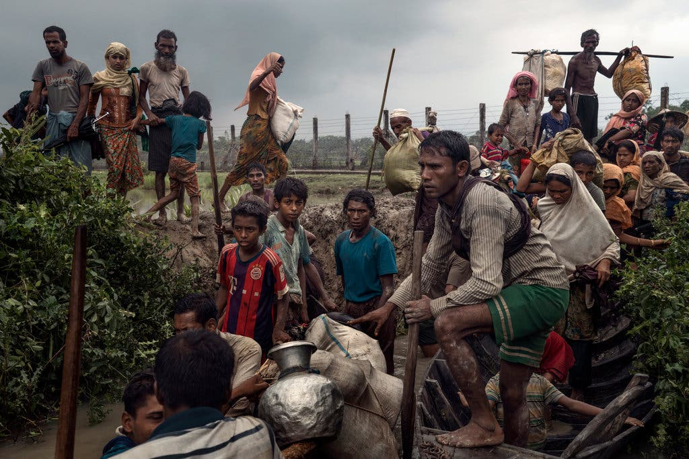
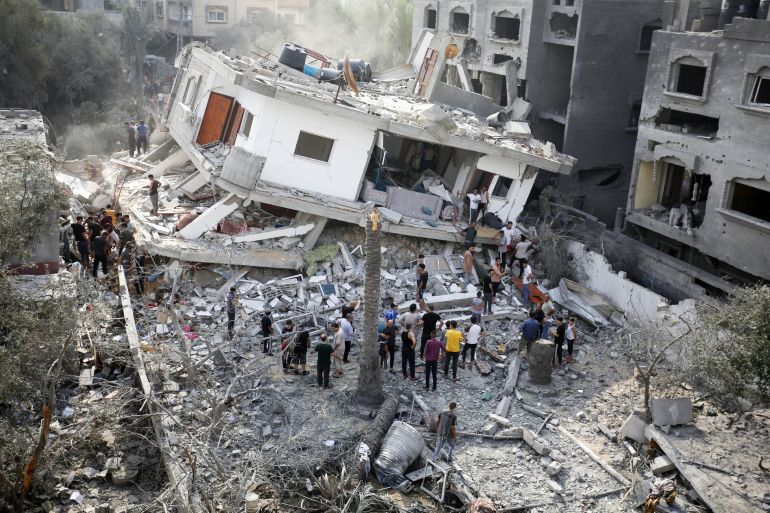

Examples of Genocide
By Michelle Lopez
Below are some examples of genocides that are not widely known. They are the result of strong conflicts involving heritage and the hate generated among them.
The Bosnian Genocide: 1992-1995
After the collapse of Yugoslavia, the republics that were once united through their heritage started declaring their independence. Serbia, in particular, started gaining popularity and its nationalism grew. As a result of its strong nationalism, the Serb leader, Radovan Karadžić, called for the disappearance of Bosniaks when Bosnia declared their independence. In 1992, the formation of concentration camps was just the beginning of the “ethnically cleansing” that Serbia was committing. An estimated 100,000 people were killed and more than 2 million people became refugees. On February 26, 2007, the Srebrenica massacre was formally recognized as a genocide.

The Rwandan Genocide: April 7, 1994 - July 15, 1994
Over the period of 100 days, 800,000 civilians were killed and approximately 2,000,000 Rwandans fled the country after the massacre. The ethnic group Hutu, called for the extermination of the minority ethnic group Tutsi. The racialization of the ethnic groups instilled the demand for equality among the Hutu. In an effort to gain political power, the Hutu participated in the killings of the Tutsi and further fueled the genocide by encouraging Hutu civilians to kill any Tutsi they knew. On June 16, 2006, the Rwanda killings were recognized as genocide.

The Rohingya Genocide: 2016 - Present
The Rohingya genocide started in 2016 and the persecution of Rohingya Muslims is still ongoing. With a majority of the population of Myanmar being Buddhist, the Rohingya people have been targeted by the Myanmar government and nationalist Buddhists. The Myanmar military launched a crackdown in the Rakhine state killing many civilians, sexually assaulting many women, and brutally injuring many others. Due to the hatred toward the Rohingya people, over 24,000 Rohingya people were killed and more than 700,000 fled the country.

The Palestinian Genocide: 1948 - Present
The Israeli-Palestinian conflict dates back to 1948, but the violence and killings among both groups has been ongoing. With the recent attacks and the countless number of civilians being killed in Gaza, it has not legally been recognized as genocide. However, it is evident that the thousands of Palestians being killed and the atrocious conditions Palestinians are experiencing “point to a genocide in the making”. In the bombing in Gaza, over 11,000 people have been killed and over 27,000 people are injured. These numbers are only increasing. It is alarming for government officials to not take action in recognizing the mass killings as a genocide as there is an intent to remove Palestinians.

Back to top